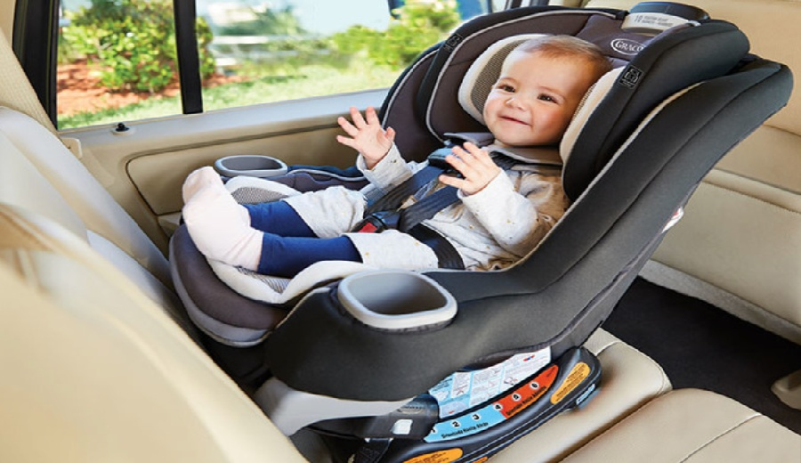
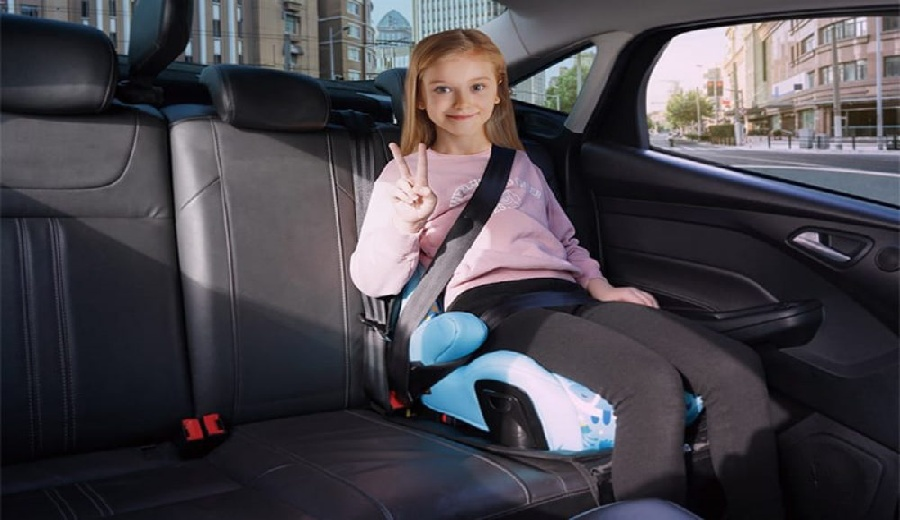
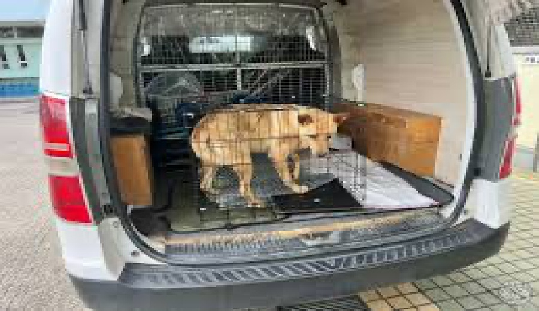

正向安全座椅
正向安全座椅適合較大幼童，乘坐更穩。不是小王座，是安全第一排。
車輛具乘客險保障，所有乘客皆需合法座位，嬰幼兒與孩童也列入乘車人數，嚴禁超載。
重視守時、禮貌、路線熟悉與服務細節，讓接送不只是移動，而是旅程第一段質感。
依路線、時段、車型、人數與加購項目確認報價，清楚說明，不讓費用躲貓貓。
接機請提供正確航班編號；若航班延誤、取消、提早或轉降，請主動通知客服。
提供乾淨舒適車輛，車內禁菸、禁檳榔，讓乘車品質維持在漂亮水位。
到府接送、專車直達，免拖行李轉乘，替您保留體力與好心情。
可以。請於預約時提供所有上車點、下車點與中途點。若多點接送增加里程、等待時間或繞路，客服會另行確認費用。
可以。夜間、清晨、連續假期、跨年、大型活動或高需求時段，可能依車輛調度與時段酌收費用，最終以客服確認為準。
需要。客服確認報價後，請於指定時間內支付訂金並回傳匯款截圖，才算正式保留車輛與司機檔期。
國際線建議至少預留報到、托運、安檢與交通緩衝時間；國內線也建議避免壓線出發。若乘客自行要求較晚出發，後續誤機或延誤風險由乘客自行承擔。
接機會合點依機場、航廈、車輛臨停規範與客服通知為準。請保持 LINE 官方客服 或手機暢通，出關領完行李後主動聯繫客服或司機。
接機免費等待時間原則為航班實際落地後 75 分鐘內；一般接送、送機與指定時間接送等待時間原則為約定時間後 30 分鐘內。超過等待時間，需依現場與司機後續行程酌收等待費或視同服務完成。
請務必主動通知客服。客服會依航班狀況與當日車輛調度協助調整。若造成額外派車、等待、跨航廈、跨機場或路線變更，可能產生費用差額。
可以。短暫休息可依行程與路線安排；若長時間停留、增加停靠點或改變路線，可能另計費用。
請直接提供人數、每件行李尺寸、嬰兒車、輪椅、登山裝備或特殊物品照片給客服。客服會協助建議車型，避免現場上演「後車廂俄羅斯方塊大賽」。
正向安全座椅適合較大幼童，乘坐更穩。不是小王座，是安全第一排。

反向安全座椅適合嬰幼兒與較小寶寶，請提前預約，數量有限。

兒童增高墊讓安全帶位置更合適，孩子坐得穩，大人心也穩。

寵物接送毛孩也能一起出門，請使用寵物袋、籠或箱，車廂更友善。
接貴賓、接家人、接迷路靈魂都清楚，遠遠一看就知道找誰。
樓梯不是健身房，需搬運請先告知，客服協助安排。
安全設備數量有限，請於預約前告知孩童年齡、身高、體重與需求。現場才喊加一張，司機可能只能用眼神替您加油。
寵物需放置於寵物袋、寵物籠或寵物箱，並提前告知尺寸與數量。如造成髒污或異味，將依情況酌收清潔費。
適合機場、港口、車站或活動現場接待貴賓。請提供舉牌文字、航班或集合資訊，讓會合更清楚。
行李搬運需提前告知樓層、件數與是否有電梯。樓梯很誠實，費用也會很誠實。
有任何接送、行李、航班、加購或車型安排問題，歡迎透過 LINE 官方客服 客服諮詢。提前說明越完整，安排越精準。